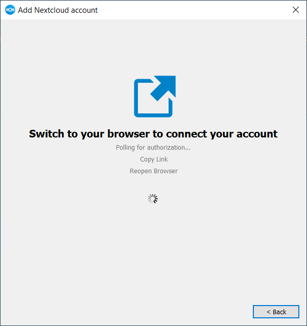

Installation
Sie können die neueste Version des Nextcloud Desktop Synchronization Client von der Nextcloud-Downloadseite herunterladen. Es gibt Clients für Linux, macOS und Microsoft Windows.
Die derzeit unterstützten Server-Releases sind die letzten drei stabilen Versionen zum Zeitpunkt der Veröffentlichung. Das bedeutet, dass die Release-Reihe latest stabile Server-Hauptversionen unterstützt. Die unterstützten Hauptversionen finden Sie unter https://github.com/nextcloud/server/wiki/Maintenance-and-Release-Schedule.
Die Installation unter macOS und Windows ist die gleiche wie bei jeder anderen Softwareanwendung: Laden Sie das Programm herunter, doppelklicken Sie darauf, um die Installation zu starten, und folgen Sie dann dem Installationsassistenten. Nach der Installation und Konfiguration hält sich der Synchronisierungsclient automatisch auf dem neuesten Stand; weitere Informationen finden Sie unter Der automatische Updater.
Linux-Benutzer müssen den Anweisungen auf der Download-Seite folgen, um das entsprechende Repository für ihre Linux-Distribution hinzuzufügen, den Signaturschlüssel zu installieren und dann ihren Paketmanager zum Installieren des Desktop-Sync-Clients zu verwenden. Linux-Benutzer aktualisieren ihre Sync-Clients auch über den Paketmanager und der Client zeigt eine Benachrichtigung an, wenn ein Update verfügbar ist.
Linux-Benutzer müssen außerdem einen Passwort-Manager wie GNOME Keyring oder KWallet aktiviert haben, damit sich der Synchronisierungsclient automatisch anmelden kann.
Auf der Download-Seite finden Sie auch Links zu Quellcode-Archiven und älteren Versionen.
Systemanforderungen
Windows 10+ (nur 64-Bit)
macOS 12.0+ (nur 64-Bit)
Linux (Ubuntu 22.04 oder openSUSE 15.5 oder Alma 8 oder …) (nur 64-Bit)
Bemerkung
Für Linux-Distributionen unterstützen wir, sofern technisch möglich, die aktuellen LTS-Versionen. Für BSD unterstützen wir sie, sofern technisch möglich, testen sie jedoch nicht.
Anpassen der Windows-Installation
Wenn Sie den Nextcloud Desktop Client auf Ihrem lokalen System installieren möchten, können Sie einfach die .msi-Datei starten und im folgenden Assistenten konfigurieren.
Funktionen
Das MSI-Installationsprogramm bietet mehrere Funktionen, die einzeln installiert oder entfernt werden können und über die Befehlszeile gesteuert werden können. Wenn Sie die Installation automatisieren, führen Sie den folgenden Befehl aus:
msiexec /passive /i Nextcloud-x.y.z-x64.msi
Der Befehl installiert den Nextcloud Desktop Client am Standardspeicherort mit aktivierten Standardfunktionen. Wenn Sie beispielsweise Desktop-Verknüpfungssymbole deaktivieren möchten, können Sie den obigen Befehl einfach wie folgt ändern:
msiexec /passive /i Nextcloud-x.y.z-x64.msi REMOVE=DesktopShortcut
Eine Liste der verfügbaren Funktionen finden Sie in der folgenden Tabelle:
Funktion |
Standardmäßig aktiviert |
Beschreibung |
Zu deaktivierende Eigenschaft |
|---|---|---|---|
Client |
Ja, erforderlich |
Der eigentliche Client |
|
DesktopShortcut |
Ja |
Fügt eine Verknüpfung zum Desktop hinzu |
|
StartMenuShortcuts |
Ja |
Fügt eine Verknüpfung zum Startmenü hinzu |
|
ShellExtensions |
Ja |
Fügt Explorer-Integration hinzu |
|
Installation
Sie können auch nur den Client selbst installieren, indem Sie den folgenden Befehl verwenden:
msiexec /passive /i Nextcloud-x.y.z-x64.msi ADDDEFAULT=Client
Wenn Sie beispielsweise alles außer DesktopShortcut und der Funktion ShellExtensions installieren möchten, haben Sie zwei Möglichkeiten:
Sie benennen explizit alle Features, die Sie tatsächlich installieren möchten (Whitelist), wobei
Clientsowieso immer installiert wird:msiexec /passive /i Nextcloud-x.y.z-x64.msi ADDDEFAULT=StartMenuShortcuts
Sie übergeben die Eigenschaften
NO_DESKTOP_SHORTCUTundNO_SHELL_EXTENSIONS:msiexec /passive /i Nextcloud-x.y.z-x64.msi NO_DESKTOP_SHORTCUT="1" NO_SHELL_EXTENSIONS="1"
Bemerkung
Die Nextcloud .msi merkt sich diese Eigenschaften, sodass Sie sie bei Upgrades nicht angeben müssen.
Bemerkung
Sie können diese nicht verwenden, um die installierten Funktionen zu ändern. Wenn Sie dies tun möchten, lesen Sie den nächsten Abschnitt.
Ändern der installierten Funktionen
Sie können die installierten Funktionen später mithilfe der Eigenschaften REMOVE und ADDDEFAULT ändern.
Wenn Sie die Desktopverknüpfung später hinzufügen möchten, führen Sie den folgenden Befehl aus:
msiexec /passive /i Nextcloud-x.y.z-x64.msi ADDDEFAULT="DesktopShortcut"
Wenn Sie es entfernen möchten, führen Sie einfach den folgenden Befehl aus:
msiexec /passive /i Nextcloud-x.y.z-x64.msi REMOVE="DesktopShortcut"
Windows verfolgt die installierten Funktionen und die Verwendung von REMOVE oder ADDDEFAULT wirkt sich nur auf die genannten Funktionen aus.
Vergleichen Sie REMOVE und ADDDEFAULT im Windows Installer Guide.
Bemerkung
Sie können bei der Erstinstallation nicht REMOVE angeben, da dadurch alle Funktionen deaktiviert werden.
Installationsordner
Sie können den Installationsordner anpassen, indem Sie die Eigenschaft INSTALLDIR wie folgt angeben:
msiexec /passive /i Nextcloud-x.y.z-x64.msi INSTALLDIR="C:\Program Files\Non Standard Nextcloud Client Folder"
Seien Sie vorsichtig, wenn Sie PowerShell anstelle von cmd.exe verwenden. Es kann schwierig sein, die Leerzeichen genau dort zu maskieren. Die Angabe von INSTALLDIR auf diese Weise funktioniert nur bei der ersten Installation. Sie können .msi nicht einfach mit einem anderen Pfad erneut aufrufen. Wenn Sie es dennoch ändern müssen, deinstallieren Sie es zuerst und installieren Sie es dann mit dem neuen Pfad erneut.
Automatische Updates deaktivieren
Um automatische Updates zu deaktivieren, können Sie die Eigenschaft SKIPAUTOUPDATE übergeben.:
msiexec /passive /i Nextcloud-x.y.z-x64.msi SKIPAUTOUPDATE="1"
Nach der Installation starten
Um den Client nach der Installation automatisch zu starten, können Sie die Eigenschaft LAUNCH übergeben.:
msiexec /i Nextcloud-x.y.z-x64.msi LAUNCH="1"
Mit dieser Option wird auch das Kontrollkästchen entfernt, damit Benutzer entscheiden können, ob sie den Client im nicht passiven/ruhigen Modus starten möchten.
Bemerkung
Ohne GUI hat diese Option keine Auswirkung.
Kein Neustart nach der Installation
Der Nextcloud-Client plant nach der Installation einen Neustart, um sicherzustellen, dass die Explorer-Erweiterung korrekt (ent-) geladen wird. Wenn Sie den Neustart selbst durchführen, können Sie die Eigenschaft REBOOT festlegen:
msiexec /i Nextcloud-x.y.z-x64.msi REBOOT=ReallySuppress
Dies führt dazu, dass msiexec mit dem Fehler ERROR_SUCCESS_REBOOT_REQUIRED (3010) beendet wird. Wenn Ihr Bereitstellungstool dies als tatsächlichen Fehler interpretiert und Sie dies vermeiden möchten, können Sie stattdessen DO_NOT_SCHEDULE_REBOOT festlegen:
msiexec /i Nextcloud-x.y.z-x64.msi DO_NOT_SCHEDULE_REBOOT="1"
Installationsassistent
Der Installationsassistent führt Sie Schritt für Schritt durch die Konfigurationsoptionen und die Kontoeinrichtung. Zuerst müssen Sie die URL Ihres Nextcloud-Servers eingeben.

Wenn Sie bereits ein Konto bei einer Nextcloud-Instanz haben, klicken Sie auf Bei Ihrer Nextcloud anmelden. Wenn Sie keine Nextcloud-Instanz und kein Konto dort haben, möchten Sie möglicherweise ein Konto bei einem Anbieter registrieren. Klicken Sie in diesem Fall auf Konto beim Anbieter erstellen. Bitte beachten Sie, dass der Desktop-Client möglicherweise ohne Anbieterunterstützung erstellt wurde. In diesem Fall wird diese Seite nicht angezeigt. Stattdessen werden Sie zur nächsten Seite weitergeleitet.

Geben Sie die URL für Ihre Nextcloud-Instanz ein. Die URL ist dieselbe URL, die Sie in Ihren Browser eingeben, wenn Sie versuchen, auf Ihre Nextcloud-Instanz zuzugreifen.
Jetzt sollte sich Ihr Webbrowser öffnen und Sie auffordern, sich bei Ihrer Nextcloud-Instanz anzumelden. Geben Sie Ihren Benutzernamen und Ihr Passwort in Ihren Webbrowser ein und gewähren Sie Zugriff. Kehren Sie anschließend zum Assistenten zurück. Bitte beachten Sie, dass Sie Ihren Benutzernamen und Ihr Passwort möglicherweise nicht eingeben müssen, wenn Sie bereits bei Ihrem Browser angemeldet sind.

Auf dem Bildschirm mit den lokalen Ordneroptionen können Sie alle Ihre Dateien auf dem Nextcloud-Server synchronisieren oder einzelne Ordner auswählen. Der standardmäßige lokale Synchronisierungsordner ist Nextcloud in Ihrem Home-Verzeichnis. Sie können dies auch ändern.
Wenn Sie die Auswahl Ihrer Synchronisierungsordner abgeschlossen haben, klicken Sie unten rechts auf die Schaltfläche „Verbinden“. Der Client versucht, eine Verbindung zu Ihrem Nextcloud-Server herzustellen. Wenn dies erfolgreich ist, schließt sich der Assistent. Sie können die Synchronisierungsaktivität nun beobachten, wenn Sie den Hauptdialog durch Klicken auf das Tray-Symbol öffnen.